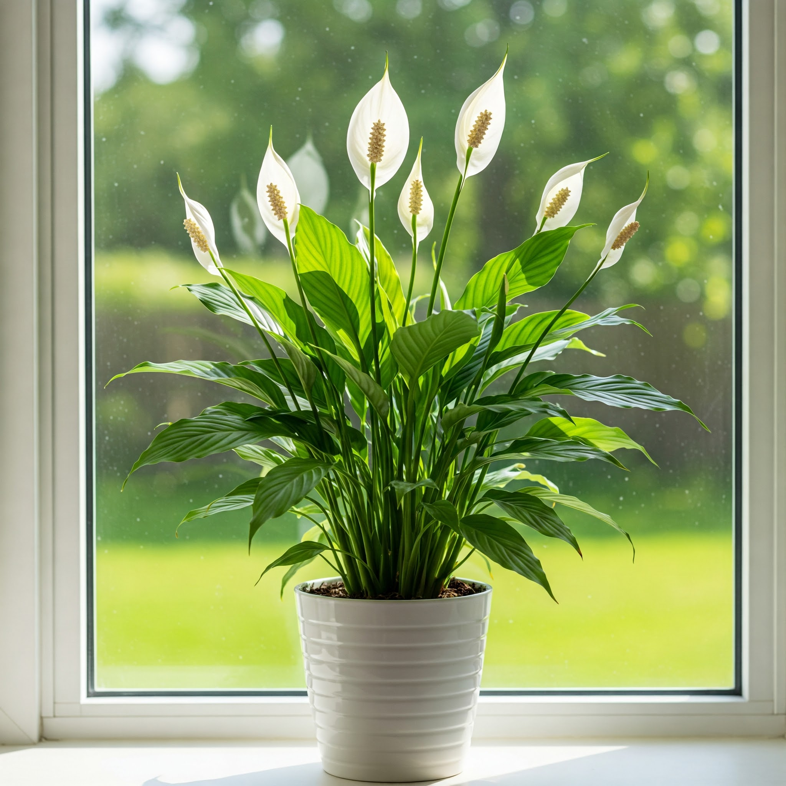

Peace Lily (Spathiphyllum)

Description
The Peace Lily, or Spathiphyllum, is a popular and elegant houseplant beloved for its glossy, dark green leaves and striking white "flowers" (which are actually modified leaves called spathes). Native to the tropical rainforests of the Americas, it's known for its relatively easy care and air-purifying qualities, making it a fantastic addition to homes and offices.
Care Instructions
- Light: Prefers medium to low indirect light. Avoid direct sunlight, which can scorch the leaves. It can tolerate lower light conditions but may flower less.
- Water: Keep the soil consistently moist but not waterlogged. Water thoroughly when the top inch of soil feels dry. Peace Lilies are known to droop dramatically when thirsty, but they usually perk up quickly after watering. Using filtered or distilled water can prevent brown leaf tips caused by chlorine sensitivity.
- Soil: Use a well-draining, peat-based potting mix.
- Temperature: Thrives in typical indoor temperatures between 18-29°C (65-85°F). Keep away from drafts and sudden temperature changes.
- Humidity: Appreciates higher humidity levels, typical of its native environment. Misting the leaves occasionally, using a pebble tray, or placing a humidifier nearby can help, especially in dry indoor environments (like heated rooms in Munich winters).
- Fertilizer: Feed with a balanced liquid fertilizer diluted to half-strength every 6-8 weeks during the spring and summer growing season. Reduce feeding in fall and winter.
Fun Facts
- Common Names: Spath, White Sails, Cobra Plant.
- Air Purifier: Famously listed in NASA's Clean Air Study for its ability to remove certain toxins like benzene and formaldehyde from the air.
- Symbolism: Often associated with peace, purity, and sympathy.
- Not a True Lily: Despite its name, it belongs to the Araceae family, not the Liliaceae family.
Toxicity
Caution: Peace Lilies contain calcium oxalate crystals and are considered toxic to cats, dogs, and humans if ingested. Chewing can cause irritation of the mouth and gastrointestinal tract. Keep out of reach of pets and children.